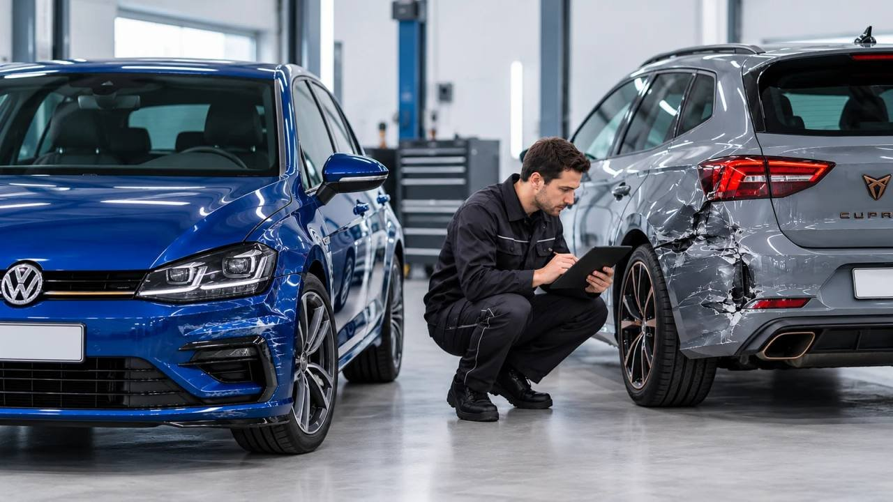

Kiểm tra xe sau tai nạn

Sau một tai nạn giao thông, không phải tất cả thiệt hại đều rõ ràng ngay lúc nhìn đầu. Trong J&S servis, chúng tôi sẽ thực hiện kiểm tra kỹ thuật ban đầu của các phương tiện Volkswagen, Audi, Škoda, SEAT và CUPRA và đề nghị hành động tiếp theo.
Việc kiểm tra bao gồm những gì?
- Đánh giá thiệt hại rõ ràng đối với phương tiện.
- Kiểm tra các tính năng kỹ thuật và an toàn hiện có.
- Các khuyến nghị cho chẩn đoán tiếp theo, đo lường hoặc sửa chữa.
Trợ giúp về yêu cầu bồi thường bảo hiểm
Nếu sau tai nạn bạn cần tư vấn về thủ tục tiếp theo hoặc liên hệ với công ty bảo hiểm, bạn có thể liên hệ với chúng tôi. Tùy thuộc vào tình huống cụ thể, chúng tôi sẽ thống nhất với bạn những gì chúng tôi có thể giúp bạn và ở mức độ nào.
Phạm vi và chi phí kiểm tra
Chúng tôi sẽ thảo luận với bạn về phạm vi công việc tiếp theo và chi phí ước tính trước. Chẩn đoán, tháo rời và sửa chữa được tính riêng biệt khi thỏa thuận.
Việc kiểm tra đầu vào không thay thế ý kiến chuyên gia hoặc kiểm tra toàn diện sau khi tháo dỡ các bộ phận bị hư hỏng. Nó không thể loại trừ tất cả các thiệt hại tiềm ẩn.

Trước khi đặt lịch
Khi đặt lịch, hãy mô tả hư hỏng và tình trạng xe; với xe hybrid hoặc xe điện, việc thống nhất tiếp nhận trước đặc biệt quan trọng. Kiểm tra góc đặt bánh hoặc hiệu chuẩn hệ thống hỗ trợ có thể được đề xuất theo kết quả, không phải gói tự động cho mọi vụ tai nạn.